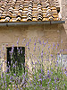
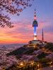
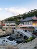
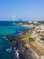
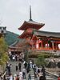
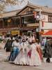

Esta es una breve crónica de mi visita a Italia. Da clic sobre las fotos miniatura para tener una vista más grande de cada fotografía. ¡Disfrútalo!
| Imagen miniatura | Lugar (nombre) | Fecha y hora aprox. de la visita | Descripción | Mapa de la ubicación |
|---|---|---|---|---|
|
Pozzarello | 12 de Julio, 14:00 hrs (Calor abrasador de mediodía) | La casa en la que nos alojamos se llamaba Pozzarello y fue construida alrededor del año 1200 como hogar del jardinero que cuidaba los terrenos del castillo aledaño. Las gruesas paredes nos mantenían agradablemente frescos adentro, a pesar del calor abrasador del medio día. Esta es la vista desde la ventana de nuestra habitación. | MAPA TOSCANA |
|
El campo Toscano | 13 de Julio, 10:30 hrs (Mañana soleada) | Es la escena del camino a Montalcino (¡todos los caminos conducen a Montalcino!). Se parece mucho a la escena del camino a Sienna, y al camino hacia la tienda de comestibles. Estábamos rodeados de hermosos paisajes durante la mayor parte del viaje. | |
|
Sienna | 14 de Julio, 17:00 hrs (Tardecita de verano) | La ciudad más cercana a nuestra villa era Sienna, estaba a unos 30 minutos. Pasamos muchos días explorando las calles empinadas y torcidas, probando la cocina local en restaurantes al aire libre, y parando en la oscuridad y haciendo eco en las iglesias principales o Duomos para escapar del sol. | |
|
Postres | 15 de Julio, 16:00 hrs (Tarde cálida) | Durante nuestro viaje probamos deliciosos postres artesanales tradicionales de la región. | |
|
Catedral | 16 de Julio, 11:00 hrs (Mañana despejada) | La imponente catedral en el centro de la ciudad destaca por su impresionante arquitectura histórica. | |
 |
Lavanda | 17 de Julio, 18:30 hrs (Atardecer templado) | Los extensos campos de lavanda perfumaban el aire mientras recorriamos los caminos toscanos. |
Esta es una lista de los destinos que me gustaría explorar próximamente alrededor del mundo.
| Imagen miniatura | Destino | Época / Clima estimado | Descripción del viaje | Mapa regional |
|---|---|---|---|---|
 |
Seúl, Corea del Sur | Otoño (Clima fresco y templado) | Recorrer los palacios históricos, la vibrante cultura moderna urbana y los hermosos paisajes con hojas de otoño. |

|
 |
Busan, Corea del Sur | Primavera (Brisa marina agradable) | Disfrutar de las famosas playas costeras, el templo Haedong Yonggungsa y la gastronomía marina local. | |
 |
Isla Jeju, Corea del Sur | Verano (Clima cálido e insular) | Explorar la naturaleza volcánica, los senderos verdes rodeados de flora abundante y los paisajes del mar. | |
 |
Kioto, Japón | Primavera (Floración de cerezos) | Caminar entre templos ancestrales, jardines tradicionales de piedra y los icónicos senderos de bambú. | |
 |
Jeonju, Corea del Sur | Otoño (Clima sereno) | Conocer la arquitectura en la aldea Hanok tradicional y probar la auténtica gastronomía local. |